IT¶
Windows¶
Pour changer le PATH dans windows sans droit administrateur¶
Start Menu -> Panneau de configuration -> Comptes utilisateur
Modifier vos variables d’environment
Path et rajouter le chemin en séprant avec un point virgule (si déjà des paths présents)
fermer la session et la ré-ouvrir
Faire un print-screen¶
Pour faire un PrintScreen uniquement sur un écran, placer le curseur sur le bon écran et faire :
M-PrintScreen
Si un seul écran, alors pas besoin de presser la touche Alt.

Pour effacer un répertoire sous dos¶
rmdir /s
MINGW32¶
Pour envoyer un message avec Outlook
start Outlook //c ipm.note //m "mailto:johndoe@domain.com^&subject=Hello"
start Outlook //c ipm.note //m
"mailto:johndoe@domain.com;paul.traveri@gmail.com^&cc=are@gmail.com^&subject=Hello^&body=aslfdsff%0A%0Ajsdfjklé%0Aasdfjé"
Le %0A est pour insérer un retour à la ligne
emacs¶
Insatallation¶
Installer MiKTteX (développer…)
Installer emacs
Prendre la dernière version du site officiel (le .zip)
Dézipper
M-x package-install
choisir auctex
C-x C-f ~/.emacs (cela créera le .emacs au bon endroit)
copier ses lignes préférées dans celui-ci
.emacs¶
Le nom de ce fichier n’a pas de préfixe, il a juste un suffixe
(extension) qui est .emacs Il faut le copier dans home/yd
Pour éditer le .emacs ou le créer au bon emplacement¶
C-x-f ~/.emacs
Pour envoyer les choses deletée à la poubelle¶
Cela permet de récupérer les fichiers ou répertoire effacés par mégarde.
(setq delete-by-moving-to-trash t)
Pour ne pas être embêté par l’affichage des accents¶
Je préfère encoder en UTF-8. Pour cela j’insère ce bloc de code
dans le .emacs
(set-language-environment 'utf-8)
(set-terminal-coding-system 'utf-8)
(set-keyboard-coding-system 'utf-8)
(set-language-environment 'utf-8)
(prefer-coding-system 'utf-8)
Si le défaut persiste, on peut essayer les méthodes suivantes pour enlever remettre les accents.
Méthode 1¶
renommer le fichier en .txt
rouvrir ce dernier avec
Emacscopier tout le contenu
couper dans un nouveau fichier .tex
à la demande d’
Emacssi demande il y’a, ne pas l’enregistrer en UTF8, mais taper tab et choisir latin1
Remarque : Dans un pdf, si les accents sont bien présents dans emacs
et pas dans le pdf. Il faut alors faire le racourci clavier suivant~:
C-x RET f codage RET et choisir latin-1.
Méthode 2¶
M-x revert-buffer-with-coding-system
choisir utf-8 ou latin-1
Méthode 3¶
Si des accents s’affichent dans TeXworks malgré tous les packages et l’encodage UTF-8 réglés correctement (cela m’est arrivé lors d’un copier-coller du contenu de Outlook dans emacs.)
copier le contenu du fichier.tex dans un bloc note
enregistrer sous encodage UTF-8
Cela devrait fonctionner.
Méthode 4¶
You can also mark the entire file with C-x h and then try M-x recode-region. It will ask you for Text was really in and But was interpreted as. For the first file in your question, it looks like it should be latin-1 and utf-8, and for the second example it should probably be the other way around, utf-8 and latin-1.
After you got it right, you can choose which coding system to save the file with using M-x set-buffer-file-coding-system (or C-x C-m f for short).
copier/coller sans toujours à répondre à la même question du coding¶
Pour pouvoir copier/coller depuis windows et pour pas que emacs demande à chaque fois le format du coding, insérer la ligne suivante dans fichier .emacs.
(setq selection-coding-system 'compound-text-with-extensions)
Pour que les fichiers effacés en mode dired aillent dans la Corbeille de Windows
Placer ce code dans le .emacs :
(setq delete-by-moving-to-trash t)
Raccourcis clavier¶
Ci-dessous quelques raccourcis utiles pour l’utilisation de Emacs et LaTeX. La plupart de ces raccourcis ont été trouvés à l’addresse suivante https://loquehumaine.wordpress.com/2010/04/01/mes-raccourcis-emacs/ Un grand Merci donc à cette personne.
Général¶
Raccourcis |
Descriptions |
|---|---|
F7 |
mode flyspell correcteur orthographique) |
F8 |
appelle Ispell buffer |
C-h a |
propos |
C-h k |
recherche de ce que fait un raccourci |
C-g g |
annuler |
C-u 5 - |
répète 5 fois |
C-u 5 BackSpace |
efface les 5 derniers caractères |
M-/ |
complétion avec les mots des buffers ouverts |
M-x load-buffer |
charger un .emacs |
M-x xxx-mode |
mode xxx (latex,html,python,…) |
M-$ |
ispell sur le mot |
M-! |
exécuter une commande bash |
C-u- M-! |
insérer le résultat d’une commande bash |
M-x |
écrire des commandes en ligne de commande |
M-x menu-bar-mode |
pour afficher / enlever la barre d’outils |
M-x cua-mode |
copier-coller d’une autre applications |
C-x C-c |
quitte Emacs |
C-z |
minimise Emacs |
C-x u |
pour annuler (undo) |
C-x C-s |
enregistre le buffer courant |
Pour se déplacer¶
Raccourcis |
Descriptions |
|---|---|
C-a |
aller au début de la ligne |
M-a |
aller au début de la phrase |
C-e |
aller à la fin de la ligne |
M-e |
aller à la fin de la phrase |
C-f |
se déplacer au caractère suivant |
M-f |
se déplacer au mot suivant |
C-b |
se déplacer au caractère précédent |
M-b |
se déplacer au mot |
C-p |
se déplacer à ligne précédente |
C-n |
se déplacer à ligne suivante |
C-v |
écran suivant |
M-v |
écran précédent |
C-M-v |
écran suivant dans l’autre buffer |
C-l |
mettre la ligne active au milieu du buffer |
C-x l chiffres |
aller à la ligne chiffres |
M-< |
aller au début du buffer |
M-S-< |
aller à la fin du buffer |
C-u 0 C-l |
met la ligne courante en première ligne du buffer |
Marques¶
Raccourcis |
Descriptions |
|---|---|
C-SPC |
faire une marque (donc le début d une région/rectangle) |
C-@ |
faire une marque (donc le début d une région/rectangle) |
M-@ |
marquer le mot (C-u 4 M-@ marquer 4 mots) |
C-x C-x |
échanger le point et la marque |
C-u C-SPC |
revenir en arrière sur les marques |
M-h |
sélectionner le paragraphe |
C-x h |
sélectionner tout le buffer |
Editer, couper, copier, coller¶
Raccourcis |
Descriptions |
|---|---|
C-d |
tuer la prochaine lettre |
M-d |
tuer le prochain mot |
BackSpace |
tuer la lettre présédente |
M-BackSpc |
tuer le mot précédent |
C-k |
tuer la fin de la ligne |
C-w |
tuer la région |
C-y |
coller le dernier truc tué |
M-y |
revenir plus en arrière dans la liste des |
trucs tués (après C-y donc) |
|
C-t |
échanger 2 lettres |
M-t |
échanger 2 mots |
C-x C-t |
échanger 2 lignes |
C-x r r |
copier le rectangle |
C-x r k |
tuer le rectangle |
C-x r y |
coller le rectangle |
M-z x |
tuer jusqu’au caractère x |
M-u |
uppercase |
M-l |
lowercase |
M-c |
capital |
C-x C-u |
uppercase de la région |
C-x C-l |
lowercase de la région |
Rechercher et remplacer¶
Raccourcis |
Descriptions |
|---|---|
C-s |
chercher |
C-r |
chercher en arrière |
M-% |
chercher / remplacer (! pour tous, C-q C-j |
pour insérer un saut de ligne, haut bas pour |
|
naviguer dans l’historique des trucs |
|
recherchés) |
|
C-M-s |
chercer avec regexp en arrière |
C-M-% |
chercher / remplacer avec regexp |
M-x replace-string |
recherche / remplacer (permet de remplacer |
par un mot commençant par un \ ) |
Fenêtres / buffers¶
Raccourcis |
Descriptions |
|---|---|
C-x 1 |
le buffer courant devient le seul buffer |
C-x 2 |
splitter horizontalement |
C-x 3 |
splitter verticalement |
C-x 0 |
la fenêtre du buffer courant est fermé |
C-x k |
tuer le buffer |
C-x droite/gauche |
naviguer dans la liste des buffers |
C-x o |
passe l’autre fenêtre |
C-x b |
ouvrir parmi les buffers |
C-x i |
insérer un fichier |
Mode Dired¶
Raccourcis |
Descriptions |
|---|---|
q |
close the file |
c |
copy file |
R |
rename file |
D |
Delete file |
+ |
create a new dir |
z |
compress / decompress |
m |
mark a file |
u |
unmark |
U |
unmark all marked |
&m |
mark by file name extension |
%m |
mark by pattern (regex) |
g |
refresh |
x |
applique les changements |
^ |
go to parent dir |
dired-do-copy |
copier le répertoire ou fichier |
Mode LaTeX¶
Raccourcis |
Descriptions |
|---|---|
C-c C-s |
nouvelle section (défaut : section, sinon la |
plus petite sous-section courante) |
|
C-c C-e |
nouvel environnement (défaut : itemize) |
C-c C-j |
nouvel \item |
C-u C-c C-e |
changer l’environnement |
C-c C-f C-c |
textsc |
C-c C-f C-e |
emph |
C-c C-f C-i |
textit |
C-c C-f C-b |
textbf |
C-c C-c C-t |
texttt |
C-c C-f C-r |
textrm |
si entre & & |
mathrm, … |
C-c C-f C-d |
enlever le textxx |
C-u C-c C-f C-? |
remplacer le textxx par text?? |
C-c ; |
commente la région |
C-c % |
commente le paragraphe |
Formatage¶
Raccourcis |
Descriptions |
|---|---|
C-M-\ |
formater la région |
M-q |
formater le paragraphe |
C-c C-q C-e |
formater l’environnement |
C-c C-q C-s |
formater la section |
C-c . |
marquer l’environnement |
C-c * |
marquer la section |
C-M-a |
début d’environnement |
C-M-e |
fin d’environnement |
Pour supprimer les ^M en fin de ligne¶
Faire la séquence suivante :
M-< C-q C-M Enter C-q C-j Enter !
Explications :
M-<on se place au début du documentM-%on active le mode de remplacement de caractèresC-q C-Mon va remplacer les ^MC-q C-jon va y mettre à la place des retours à la ligne!on applique ces modifications à toutes les occurences rencontrées dans le fichier
Débugger emacs¶
C-c apostrophe espace
Changer le thème (couleur de fond,…)¶
J’utilise le thème misterioso (il en existe bien sûr d’autres)
(load-theme 'misterioso)
à placer dans le .emacs
LaTeX¶
Installation LaTex, Emacs et auxtex sous Linux¶
télécharger la dernière version de
tex-livesur le site officieltélécharger le .iso
copier les dossiers sur le bureau
écrire dans un terminal :
- ::
perl install-tl
I
etc/environement, modifier le fichier pour que ça ressemble à ceci :- ::
PATH=”/usr/local/texlive/2016/bin/i386-linux:/usr/local/sbin:/usr/local/bin:/usr/sbin:/usr/bin:/sbin:/bin:/usr/games” MANPATH=”/usr/local/texlive/2016/texmf/doc/man” INFOPATH=”/usr/local/texlive/2016/texmf/doc/info”
Note
changer si nécessaire 2016
installer emacs avec le synaptique
installer auxtec avec le synap
copier .emacs dans yd
pour que auxtex et emac communique entre eux, il faut rajouter ces lignes dans le .emacs (si pas déjà fait)~:
- ::
(require ‘tex-site) (add-hook ‘LaTeX-mode-hook ‘turn-on-reftex) (setq reftex-plug-into-AUCTex t) (global-font-lock-mode t)
Tout ceci est tirer du site https:\www.math.purdue.edu/~dvb/xdvi.html pour que le script pour la conversion des Figures PSTicks fonctionne, il faut rajouter (dans le script) -shell-escape après la commande latex. (ex. latex -shell-escape 1.tex)
Figure psTricks¶
Pour créer des figures pstricks j’utilise emacs pour compiler en xelatex et TeXworks pour voir le résultat compilé en mettant la fenêtre texwork à côté de celle de emacs.
Voir le résultat compilé avec xelatex avec TeXworks)¶
clique droit sur le pdf
ouvrir avec
TeXworks - a graphical user interface to the typesetting system TeX and its extensions
placer la fenêtre à coté de celle de emacs
en compilant avec C-c-c, la fenêtre TeXworks se rafraîchit automatiquement

Cropper automatiquement un pdf¶
Pour enlever le blanc autours d’une figure, utiliser le service en ligne pdfresizer. Selectionner automatique pour vraiment enlever tout le blanc autours d’une figure. L’inconvénient est qu’il y aura plus de marge entre le texte et la figure, il faudra insérer une ligne vide.
Redessiner sur un pdf :¶
convertir le pdf en .eps dans une console Unix en tapant :
pdftops -eps fichierpdf.pdf
Note
remarque cette commande marche uniquement sur un pdf d’une page seulement, si le pdf contient plusieurs pages, il faudra au préalable extraire la page qui nous intéresse. Pour ce faire, voir Extraction d’une page d’un document pdf
utiliser le fichier FicViePSTriBox.tex téléchargeable depuis ici
pour créer le pdf directement utiliser XeLaTeX (voir Compilation avec XeLaTeX depuis emacs)
pour visualiser le résultat après un C-c C-c, ouvrir le .tex avec TeXworks et choisir XeLaTeX cela va ouvrir une fenêtre pour voir le pdf créer
rogner le pdf avec Briss (voir BRISS)
Sur un print-screen avec psTricks :¶
faire un print-screen (voir Faire un print-screen)
ouvrir GIMP
enregistrer sous .eps
utiliser le fichier FicViePSTriBox.tex situé ici
pour créer le pdf directement utiliser XeLaTeX (voir Compilation avec XeLaTeX depuis emacs)
pour visualiser le résultat après un C-c C-c, ouvrir le .tex avec TeXworks et choisir XeLaTeX cela va ouvrir une fenêtre pour voir le pdf créer
rogner le pdf avec Briss (voir BRISS)
Centrer la figure (pour les grosses figures)¶
Mettre dans le préambule :
\setlength{\topmargin}{-2cm}
\setlength{\evensidemargin}{-1cm}
\setlength{\oddsidemargin}{-3cm}
pour modifier les marges.
Note
Il arrive que cela génère une page blanche avant la figure et la
page comprenant la figure soit numérotée. (malgré d’avoir utilisé
la commande \thispagestyle{empty}) On peut utiliser la commande
suivante :
\usepackage{nopageno}
Regex¶
Java Script¶
caractère seul
d -> 0-9 D -> pas des chiffres
w -> A-Z a-z 0-9 W -> pas des lettres ni des chifres
s -> espace, tabulation S tout sauf des espaces
. -> n’importe quel caractère
Quantificateur
* -> 0 ou plus
+ -> 1 ou plus
? -> 0 ou un seul
{min,max} -> entre min et max fois
{n} -> n fois
? si appairé avec un quantificateur alors ce ne sera pas gridy. gridy veut dire qui prendre la plus grande correspondance
Exemple pour Gridy :
pour enlever le gridy :
Position
^ -> début de ligne $ -> fin de ligne b -> word boundery
Exemple pour b :


Classe de caractère
[abc] -> soit un a un b ou un c [-.] -> le point n’est pas un charactère meta mais un point litéral (car il est compris dans une classe) on échappera avec si l’on veut un point litéral et qu’il n’est pas dans une classe.
“-” si il est au début de la classe il sera pris commme un trait d’union litéral. Par-contre s’il est au centre de par exemple [a-d] il sera interpréter comme un interval ici a ou b ou c ou d “^” s’il est au début alors ça inverse, par exemple [^a-c] alors tous les autres caractères seront pris sauf a,b,c.
Exemple :

Altération
(net|com) si on veut “net” ou “com”
Groupe
on appellera $1 $2 suivant qu’il y plusieurs groupe $0 représente tout ce qui a été trouvé
Back Reference

Implémentation de Regex dans Java Script¶
variable string:
var s = “hello”
variable regex :
var r = /hello/

Flags :
g pour global
/d{3}/g
i pour case insensitive
match :
match construit un array avec g, mais si la regex comporte un groupe () alors si le flag g est présent le groupe ne sera pas mis dans l’array
pour que même le groupe soit pris dans l’array, il faut utiliser r.exec(s) et faire une boucle:
var results;
while (results=r.exec(s){
createP(results[1]);
}
bash¶
Echo¶
Afficher des variable système¶
echo PATH
echo HOME
pour remplir un fichier
echo -e "Qte\tPrix\tTotal\n\n3\t5\t15frs" > fichier
Note
On peut afficher le contenu d’un fichier avec la commande cat
nom_de_fichier. Si l’on veut rajouter des lignes au fichiers on
peut utiliser >> Mais dangereux car on a vite fait d’oublier de
mettre le deuxième >.
Sed and Awk¶
Les différents moyens d’entrer du code¶
awk -f nom_du_script fichier_d_entree
En tapant tout le code dans un terminal :¶
awk '
BEGIN{
print "Hello
World"}
'
Warning
Ne pas oublier l’espace entre awk et '
En tapant le code dans un fichier avec la commande awk insérée dans le fichier :¶
Si le code contient BEGIN et une expression régulière alors on
entrera :
awk 'BEGIN { print "debut"}
$0 ~ /Drive/ {print "sdfsd"}' nom_du_fichier_d_entree
Si le code contient pas d’expression régulière mais un BEGIN, on
entrera :
awk 'BEGIN { print "debut"}
{print "sdfsd"}' nom_du_fichier_d_entree
Si le code ne contient pas de BEGIN alors on entrera :
awk '{
print "Hello World"
}
' nom_du_fichier_d_entree
Passage des variables¶
Voici un exemple pour le passage des variables d’entrée d’un programme awk entrer dans un fichier qui s’appelle glitch.
awk 'BEGIN { FS = "\n"; RS = ""; ORS = "\n\n"}
$0 ~ search {print $0}' search=$1 $2
Ici on a mis le séparateur de champ FS à un retour de ligne et le
séparateur d’enregistrement RS à une ligne vide, ceci afin de
pouvoir prendre en compte un fichier à données en bloc appelé
glitch.data dont voici un extrait :
machine Sun 3/75
8 meg memory
Prone to memory glitches
more info
more info
sadlefsdaf siwefo
asdlfa
vmasefsdae
glitche wefsd
sdafsdf
ziweower wwerwe 3234
sdfljkljké
asdfvm78
weojwd
omcvljdoji
En tapant la commande :
glitch glitc glitch.data
cela va donner :
machine Sun 3/75
8 meg memory
Prone to memory glitches
more info
more info
sadlefsdaf siwefo
asdlfa
vmasefsdae
glitche wefsd
sdafsdf
Les fonctions¶
Emplacement pour déclaration des fonctions¶
awk '
function insert (STRING, POS, INS) {
before = substr("Hello",1,POS)
after = substr("Hello",POS+1)
return before INS after
}
BEGIN{
print insert($1, 4, "XX")
}'
Divers exemples¶
Pour inverser les colonnes et les lignes¶
awk '
BEGIN{FS=";"}
{
for ( i = 1; i <= NF; ++i ){
matrice[NR,i] = $i
gsub(/\r/,"") #\r est le retour de ligne \n ne fonctione pas
}
}
END {
for ( j = 1; j <= NF; ++j ){
for ( i = 1; i <= NR; ++i ){
printf ("%s;",matrice[i,j]) #point virgule aux séparateurs de champs à la sortie
}
if ( j < NF )
print("\r")
}
}' sp.txt > Result
reStructuredText¶
Installation¶
installer Anaconda
installer VS code
modifier le path windows pointer les répertoires suivants :
anaconda3/Scripts
anaconda3 (c’est possible qu’il n’est pas nécessaire de pointer sur celui-ci)
Création d’un nouveau document¶
ouvrir Anaconda Prompt
aller dans le bon répertoire (tapez
d:pour changer de partition)une fois dans le répertoire où l’on veut mettre notre document, tapez :
sphinx-quickstart
aux différentes questions répondre comme ci-dessous :
> Separate source and build directories (y/n) [n]: y> Name prefix for templates and static dir [_]:> Project name: Mon nom de projet> Author name(s): Alpiq AG> Project release []: 1> Project language [en]: fr> Source file suffix [.rst]:> Name of your master document (without suffix) [index]:Sphinx can also add configuration for epub output: > Do you want to use the epub builder (y/n) [n]:Indicate which of the following Sphinx extensions should be enabled:> autodoc: automatically insert docstrings from modules (y/n) [n]:> doctest: automatically test code snippets in doctest blocks (y/n) [n]:> intersphinx: link between Sphinx documentation of different projects (y/n) [n]:> todo: write "todo" entries that can be shown or hidden on build (y/n) [n]: y> coverage: checks for documentation coverage (y/n) [n]:> imgmath: include math, rendered as PNG or SVG images (y/n) [n]: y> mathjax: include math, rendered in the browser by MathJax (y/n) [n]: y> ifconfig: conditional inclusion of content based on config values (y/n) [n]: y> viewcode: include links to the source code of documented Python objects (y/n)[n]:> githubpages: create .nojekyll file to publish the document on GitHub pages (y/n) [n]:> Create Makefile? (y/n) [y]:> Create Windows command file? (y/n) [y]:ajouter la ligne suivante:
master_doc = 'index'sinon ça bug avec Read The Docs aussi ça plante lorsqu’on compile dans un terminal windows (cmd) ça affiche qu’un fichier dénommécontentsest introuvable.tapez dans le terminal :
D:\tmp\sphinxTxt>make html
ouvrir Visual Studio Code
ouvrir le répertoire du projet et non le fichier .rst (File -> Open Folder)
il se peut que l’on soit demandé à selectionner le
conf.py, selectionnez celui qui se trouve dans le répertoire du projetpour ouvrir la prévisualisation cliquer sur le symbole afficher sur la figure ci-dessous. Sinon ouvrir le html dans un explorateur qui se trouve dans le répertoire _build -> html
pour l’édition, j’utilise emacs, ouvrir le fichier
index.rst
Changement de Thèmes¶
choisir son thème ici. Pour cet exemple, j’ai choisi
sphinx_rtd_themecar il est “mobile friendly”
se connecter à internet (swisscom) et tapez dans une console :
pip install sphinx_rtd_theme
ouvrir le
conf.pyet mettrehtml_theme = 'sphinx_rtd_theme'
Compilation¶
Dans un Anaconda prompt tapez :
make html
Pour voir la doc dans un navigateur internet. Ceci créera un répertoire
build et y placera deux autres répertoires : html et
doctrees Dans le répertoire html on trouvera le fichier
index.html. En cliquant sur ce dernier cela va ouvrir la doc dans
un navigateur internet.
Le répertoire doctrees sert pour la table des matières.
ou
make latex
ou
make latexpdf
Note
Après la compilation, il se peut que la table des matières ne soit pas dans l’ordre ou que toutes les sections suivantes ne soient affichées. Dans ce cas, il faut supprimer le répertoire build et refaire une compilation.
Traduction¶
installer sphinx-intl
$ pip install sphinx-intl
rajouter ces lignes dans le conf.py
locale_dirs = ['locale/'] # path is example but recommended. gettext_compact = False # optional.
make gettext
génération des fichiers po (dans le cas suivant pour le japonais)
sphinx-intl update -p _build/gettext -l de -l jasitôt fait, le fichier po se trouve dans le répertoire ./locale/ja/LC_MESSAGE`
traduire le fichier po
exemple :
msgid "Available builders" msgstr "<FILL HERE BY TARGET LANGUAGE>"Dans le cas où il y a plusieurs lignes :
msgid "" "These are the built-in Sphinx builders. More builders can be added by " msgstr "" "FILL HERE BY TARGET LANGUAGE FILL HERE BY TARGET LANGUAGE FILL HERE " "BY TARGET LANGUAGE :ref:`EXTENSIONS <extensions>` FILL HERE."
génération du document traduit, saisir dans le Anaconda Powershell Prompt
> Set-Item env:SPHINXOPTS "-D language=ja" > .\make.bat html
Pour plus d’information¶
Mise en forme¶
Numérotation chapitre, section, etc…¶
#pour les parties*pour les chapitres=, pour les sections-, pour les sous-sections^, pour les sous-sous-sections", pour les paragraphes
Listes et sous-listes¶
* une puce "*"
- une sous-liste avec "-"
+ à nouveau une sous-liste avec "+"
- une autre option
1. Liste numérotée "à la main".
2. Deuxième item.
#. Liste numérotée automatiquement.
#. Deuxième item.
Liste numérotée “à la main”.
Deuxième item.
Liste numérotée automatiquement.
Deuxième item.
Les tableaux¶
+------------------------+------------+----------+
| Header row, column 1 | Header 2 | Header 3 |
+========================+============+==========+
| body row 1, column 1 | column 2 | column 3 |
+------------------------+------------+----------+
| body row 2 | Cells may span |
+------------------------+-----------------------+
==================== ========== ==========
Header row, column 1 Header 2 Header 3
==================== ========== ==========
body row 1, column 1 column 2 column 3
body row 2 Cells may span columns
==================== ======================
donnera :
Header row, column 1
Header 2
Header 3
body row 1, column 1
column 2
column 3
body row 2
Cells may span
Header row, column 1
Header 2
Header 3
body row 1, column 1
column 2
column 3
body row 2
Cells may span columns
Insertion d’une figure¶
Si le répertoire nommé figures est au même endroit où il y a le
fichier index.rst
.. image:: /figures/IconePrevisualisation_cropped.png
:scale: 80 %
:align: center
Insérer une ligne vide¶
Utile par exemple quand on insère une figure croppée automatiquement (pas de marge blanche autours de la figure). Ainsi le texte ne sera pas trop de la figure.
.. # define a hard line break for HTML
.. |br| raw:: html
<br />
Mettre à l’emplacement où l’on veut avoir une ligne blanche :
|br|
Pour afficher un bloc avec du code¶
POUR AFFICHER CECI (un bloc avec du code)
Tapez :
::
POUR AFFICHER CECI (un bloc avec du code)
Pour créer un lien à l’intérieur d’un document¶
interne à la page ou à une autre page .rst
Warning
Pour que le lien fonctionne il faut bien effacer le répertoire
build avant (rmdir /s build) et refaire une compilation (make html).
label (à mettre où l’on veut tomber) :
.. _Nom du lien:
Par exemple si on veut que ça tombe vers une section, on le placera une ligne avant la section.
.. _Nom du lien:
reStructuredText
================
ref (à écrire où on veut mettre le lien)
Pour plus d'information veuillez vous référer à :ref:`Nom du lien`.
Ceci donnera :
Pour plus d’information veuillez vous référer à Les fonctions.
Pour créer un lien à une page internet¶
En cliquant sur le lien, cela va ouvrir une nouvelle fenêtre dans le navigateur.
En cliquant |lien|
.. |lien| raw:: html
<a href="http://python.physique.free.fr/aide/_sources/Partie1.txt"
target="_blank">ici</a>
Warning
Ne pas oublier d’indenter <a href…
On peut très bien écrire directement :
http://home.citycable.ch/windwaver/MesSources/
mais cela ne va pas ouvrir une nouvelle fenêtre dans le navigateur.
Commentaires¶
Pour commenter une ligne, mettre deux points et un espace.
Pour commenter un bloc, mettre deux points et indenter le bloc en dessous.
Mettre en évidence une chose importante¶
.. warning::
Mettre ici une chose importante
ce qui donne :
Warning
Mettre ici une chose importante
.. hint::
Une chose moins importante
ce qui donne :
Hint
Une chose moins importante
Commande |
Qui donne |
Couleur |
|---|---|---|
.. warning:: |
‘i’ int32 |
Rouge |
.. note:: |
note |
Grise |
.. tip:: |
Astuce |
Grise |
.. caution:: |
Prudence |
Grise |
.. error:: |
Erreur |
Grise |
.. hint:: |
Indice |
Grise |
Pour insérer du code à partir d’un fichier¶
Tapez le code suivant :
.. literalinclude:: /IT/sources/exemple_graphique01.py
Ce qui donnera :
# -*- coding: utf-8 -*-
"""
Exemple de plot
"""
from __future__ import division
from scipy import *
from pylab import *
x = linspace(0,10,400)
y = sin(x)*exp(-x/5)
plot(x,y)
show()
Pour insérer une vidéo¶
Tapez le code suivant :
.. raw:: html
<iframe width="560" height="315"
src="https://www.youtube.com/embed/UaIvrDWrIWM" frameborder="0"
allowfullscreen></iframe>
Ce qui donnera :
Pour insérer des formules mathématiques¶
Normalement, on peut inclure des maths avec :math:`code LaTeX`
ou alors avec .. math:: code LaTeX sur une seule ligne
.. math::
a^2
Ce qui donne :
Création du document pdf¶
à l’aide du prompt Anaconda se déplacer dans le répertoire du projet (où il y a le .rst)
tapez
make latexpdfcela va créer un répertoire latex dans le répertoire _buildouvrir le fichier .tex dans le répertoire latex avec emacs
compiler
Divers liens utiles¶
Java Script¶
Coté client¶
Pour développer un script, il faut utiliser Visual Studio et installer l’extension Live Server. Ensuite ouvrir le répertoire et clique droite sur le fichier index.html qui contient le script et open with live server.
Pour que la page se rafraichisse automatiquement dans le browser, il faut mettre dans Visual Studio Code un délais à 600ms à Autosave.
Sever Side¶
How to install node.js¶
Without amin rights :
install that so it doesn’t need to restart the sever always:
npm install -g nodemon
Then enter :
nodemon index.js
Classes¶
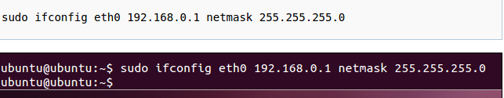Nous retournera 4.
On peut réassigner des nouvelles valeurs :
Ici le résultat sera de 3.
On peut aussi déclarer des fonctions dans nos class :


qui retounera : Loud Noise et 3
On peut passer une variable d’entrée Meow :

Le résultat : Meow et 3
On peut aussi créer des static function :

On peut alors accéder à la fonction sans passer par une variable (let)
La fonction get permet de traiter notre objet comme une propriété.


voici le résultat :

Admettons maintenant que nous voulions appliqué notre class à d’autre animaux comme chien, souris et que ces animaux hérite la même classe.
Ici Animal est la classe parent et Cat la classe enfant Cat aura hérité toutes les propriétés de Animal et on aura mis une autre valeur par défault à sound (meow).
Importons la class Cat
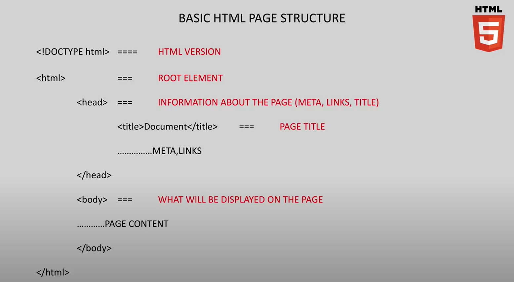et appelons cat.makeNoise()
Voici le résultat :
Faisons un cat.metaData:
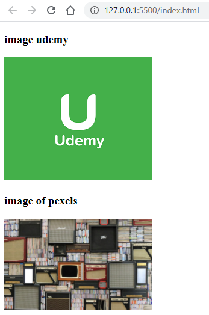Résultat :

React¶
L’installation a réussi dans le répertoire xxxxx_y, dans le répertoire formation cela échoue. Déplacer le répertoir où l’on veut après.
Pour compiler tapez :
npm start
Pour nettoyer après installation rapide voir cette video :
https://www.youtube.com/watch?v=dMH1_YtUTSQ
Fichiers de base¶
Il faut au minimum un fichier index.html et index.js.
Contenu du fichier index.html :
<!DOCTYPE html>
<html lang="en">
<head>
<meta charset="utf-8" />
<link rel="stylesheet" href="style.css" />
<link rel="icon" href="%PUBLIC_URL%/favicon.ico" />
<meta name="viewport" content="width=device-width, initial-scale=1" />
<meta name="theme-color" content="#000000" />
<meta
name="description"
content="Web site created using create-react-app"
/>
<link rel="apple-touch-icon" href="%PUBLIC_URL%/logo192.png" />
<!--
manifest.json provides metadata used when your web app is installed on a
user's mobile device or desktop. See https://developers.google.com/web/fundamentals/web-app-manifest/
-->
<link rel="manifest" href="%PUBLIC_URL%/manifest.json" />
<!--
Notice the use of %PUBLIC_URL% in the tags above.
It will be replaced with the URL of the `public` folder during the build.
Only files inside the `public` folder can be referenced from the HTML.
Unlike "/favicon.ico" or "favicon.ico", "%PUBLIC_URL%/favicon.ico" will
work correctly both with client-side routing and a non-root public URL.
Learn how to configure a non-root public URL by running `npm run build`.
-->
<title>React App</title>
</head>
<body>
<noscript>You need to enable JavaScript to run this app.</noscript>
<div id="root"></div>
<!--
This HTML file is a template.
If you open it directly in the browser, you will see an empty page.
You can add webfonts, meta tags, or analytics to this file.
The build step will place the bundled scripts into the <body> tag.
To begin the development, run `npm start` or `yarn start`.
To create a production bundle, use `npm run build` or `yarn build`.
-->
</body>
</html>
Contenu du fichier index.html :
import React from "react"
import ReactDOM from "react-dom"
ReactDOM.render(<h1>Hello World</h1>, document.getElementById("root"))
on remarque la ligne
React from "react"
qui est là pour activer JSX, une combinaison entre html et js.
<h1>Hello world!</h1>
est écrit en JSX.
Si l’on veut mettre plusieurs balise html comme
<h1>Hello world!</h1><p>Ceci est un paragraphe</p>
nous devrons les inclure dans un un div
<div><h1>Hello world!</h1><p>Ceci est un paragraphe</p></div>
ReactDOM & JSX¶
https://www.youtube.com/watch?v=DLX62G4lc44&t=565s
Objective: Fill in the boilerplate React code required to render an unordered list (<ul>) to the page. The list should contain 3 list items (<li>) with anything in them you want.
HINTS: import the libraries you need first use one of the libraries to render some JSX to the page
https://www.youtube.com/watch?v=DLX62G4lc44&t=1472s
import React from "react"
import ReactDOM from "react-dom"
ReactDOM.render(
<ul>
<li>1er élément</li>
<li>2ème élément</li>
<li>3ème élément</li>
</ul>,
document.getElementById("root"))
Functional Components Practice¶
https://www.youtube.com/watch?v=DLX62G4lc44&t=1234s
Objectives:
Set up the basic React code from scratch
Create a functional component called MyInfo that returns the following UI:
An h1 with your name
A paragraph with a little blurb about yourself
An ordered or unordered list of the top 3 vacaton spots you’d like to visite
Render an instance of that functional component to the browser Extra challenge: learn on your own (Google) how you can add some style to your page. (We will also cover this in an upcoming lesson).
https://www.youtube.com/watch?v=DLX62G4lc44&t=1472s
import React from "react"
import ReactDOM from "react-dom"
function MyInfo() {
return (
<div>
<h1>Zebulus André</h1>
<p>I'm trying to learn React</p>
<ol>
<li>Hawaii</li>
<li>New York</li>
<li>Seoul</li>
</ol>
</div>
)
}
ReactDOM.render(<MyInfo />, document.getElementById("root"))
Move Components into Seperate Files¶
Il serait bien de mettre les composants dans un répertoire nommé components.
Un fichier portant le même nom que le composant doit être créé. Il devra comporter import et export
import React from "react"
function MyInfo() {
return (
<div>
<h1>Zebulus André</h1>
<p>I'm trying to learn React</p>
<ol>
<li>Hawaii</li>
<li>New York</li>
<li>Seoul</li>
</ol>
</div>
)
}
export default MyInfo
Le fichier index devra importer ce fichier dans le répertoire où il se trouve. Noter bien le Nom du composant est précédé par < suivi d’un espace />.
import React from "react"
import ReactDOM from "react-dom"
import MyInfo from "./components/MyInfo"
ReactDOM.render(<MyInfo />, document.getElementById("root"))
Parent/Child Components¶
https://www.youtube.com/watch?v=DLX62G4lc44&t=2107s
Voici une structure dont une page internet se définirait :

Set up the React app from scratch Render an App component (defined in a separate file) Inside App, render:
A Navbar component
A MainContent component
A Footer component
https://www.youtube.com/watch?v=DLX62G4lc44&t=2594s
Voici arborescence des fichiers :
Le fichier index.js :
import React from "react"
import ReactDOM from "react-dom"
import App from "./App"
ReactDOM.render(<App />,document.getElementById("root"))
Le composant App :
import React from "react"
import Header from "./components/Header"
import MainContent from "./components/MainContent"
import Footer from "./components/Footer"
function App() {
return (
<div>
<Header />
<MainContent />
<Footer />
</div>
)
}
export default App
Le composant Header :
import React from "react"
function Header() {
return (
<header>
<nav>This is a awsome navbar</nav>
</header>
)
}
export default Header
Le composant MainContent :
import React from "react"
function MainContent() {
return(
<main>
<p>This is a paragraph</p>
This is the main content.
<ul>
<li>oeléwfoé</li>
<li>eriémcvjl</li>
<li>ewrojdflfsd</li>
<li>pook,mnk</li>
</ul>
</main>
)
}
export default MainContent
Le composant Footer :
import React from "react"
function Footer() {
return (
<footer>
this is an awsome footer. Pieds de page.
</footer>
)
}
export default Footer
Voici le résultat:

Todo App - Phase 1¶
From scratch, initialize the React app
Render an <App /> component
Create the <App /> component from scratch
Have the <App /> component render 3 or 4 checkboxes with paragraphs or spans next to it like you are making a todo list with some hard-coded items on it
Le fichier index.js :
import React from "react"
import ReactDOM from "react-dom"
import App from "./App"
ReactDOM.render(<App />, document.getElementById("root"))
Le component App.js :
import React from "react"
function App() {
return (
<div>
<input type="checkbox" />
<p>This is the first text of the checkbox 1</p>
<input type="checkbox" />
<p>This is the second text of the checkbox 2</p>
<input type="checkbox" />
<p>This is the third text of the checkbox 3</p>
<input type="checkbox" />
<p>This is the forth text of the checkbox 4</p>
</div>
)
}
export default App
Le résultat :

Styling React with CSS Classes¶
On placera le fichier style.css à l’endroit suivant :

Le fichier style.css :
body {
margin: 0;
}
.navbar {
height: 100px;
background-color: #333;
color: whitesmoke;
margin-bottom: 15px;
text-align: center;
font-size: 30px;
display: flex;
justify-content: center;
align-items: center;
}
En JSX on doit utiliser className=”…”
Le fichier Header.js :
import React from "react"
function Header() {
return (
<header className="navbar">
<nav>This is a awsome navbar</nav>
</header>
)
}
export default Header
Le résultat :

JSX to JavaScript and Back¶
Le code suivant n’affichera pas les variables firstName et lastName.
import React from "react"
import ReactDOM from "react-dom"
function App() {
const firstName = "Bob"
const lastName = "Ziroll"
return (
<h1>Hello firstName + " " + lastName !</h1>
)
}
ReactDOM.render(<App />, document.getElementById("root"))

Si l’on veut qu’à l’intérieur de JSX, du Java Script soit interprété, il faudra faire l’usage d’accolades {}
import React from "react"
import ReactDOM from "react-dom"
function App() {
const firstName = "Bob"
const lastName = "Ziroll"
return (
<h1>Hello {firstName + " " + lastName}!</h1>
)
}
ReactDOM.render(<App />, document.getElementById("root"))

En ES6 cela donnera:
import React from "react"
import ReactDOM from "react-dom"
function App() {
const firstName = "Bob"
const lastName = "Ziroll"
return (
<h1>Hello {`${firstName} ${lastName}`}!</h1>
)
}
ReactDOM.render(<App />, document.getElementById("root"))
Un autre exemple:
import React from "react"
import ReactDOM from "react-dom"
function App() {
const firstName = "Bob"
const lastName = "Ziroll"
const date = new Date()
const hours = date.getHours()
const minutes = date.getMinutes()
let timeOfDay
if (hours >= 0 && hours <= 5)
timeOfDay = "night"
else if (hours>5 && hours<12)
timeOfDay="morning"
else if (hours > 12 && hours <= 17)
timeOfDay = "afternoon"
else
timeOfDay ="evening"
return (
<h1>Good {timeOfDay} {`${firstName} ${lastName}`} it's {hours}:{minutes}!</h1>
)
}
ReactDOM.render(<App />, document.getElementById("root"))
Ce qui donnera:
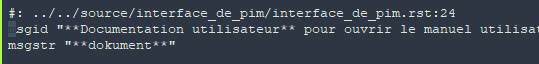Inline Styles with the Style Property¶
Si l’on veut mettre du style sur un h1 par exemple on mettra deux accolades un pour dire que l’on est dans du java script et l’autre pour dire que c’est un objet. Tous les noms qui ont un trait d’union devront être modifiés : enlever les traits d’union et mettre une lettre majuscule sur le nom qui venait après le trait d’union. Exemples background-color devient : backgroundColor. Si la propriété n’a que des chiffres on peut enlever les guillemets. Exemple : fontSize: 20 mais si on veut spécifier l’unité on remettra les guillements : fontSize: “20px”
<h1 style={{color:"#FF8C00"},{backgroundColor:}}> ... </h1>
Si beaucoup de style est appliqué, alors il peut être bien de noter cela comme suit :
const styles = {
color: "#FF8C00",
backgroundColor: "#FF2D00",
fontSize: 20
}
return(
<h1 style={styles}> ... </h1>
...
)
L’inline Styles peut être intéressant lorsque l’on veut quelque chose de dynamique. Prenons l’exemple fait plus haut.
import React from "react"
import ReactDOM from "react-dom"
function App() {
const firstName = "Bob"
const lastName = "Ziroll"
const date = new Date()
const hours = date.getHours()
const minutes = date.getMinutes()
let timeOfDay
const styles = {
fontSize: 50
}
if (hours >= 0 && hours <= 5){
timeOfDay = "night"
styles.color = "#04756F"
}
else if (hours>5 && hours<12){
timeOfDay="morning"
styles.color = "#8914A3"
}
else if (hours > 12 && hours <= 17){
timeOfDay = "afternoon"
styles.color = "#D90000"
}
else {
timeOfDay ="evening"
styles.color = "#6A0FDE"
}
return (
<h1 style = {styles}>Good {timeOfDay} {`${firstName} ${lastName}`} it's {hours}:{minutes}!</h1>
)
}
ReactDOM.render(<App />, document.getElementById("root"))
En testant à différentes heures
const date = new Date(2020,12,16,1,13)

const date = new Date(2020,12,16,7,28)
const date = new Date(2020,12,16,14,47)
const date = new Date(2020,12,16,21,16)

Todo App - Phase 2¶
Time to have fun styling! But first things first:
Change the input/p combo below to be a new component called <TodoItem />. <TodoItem /> (for now) will just have the same displayed data below (every todo item is the same) hardcoded inside of it. (We’ll learn soon how to make the TodoItem more flexible)
Style up the page however you want! You’re welcome to use regular CSS (in the CSS file) or inline styles, or both!
Le component TodoItem :
import React from "react"
function TodoItem() {
return (
<div className="todo-item">
<input type="checkbox" />
<p>This is the first text of the checkbox 1</p>
</div>
)
}
export default TodoItem
Le component App :
import React from "react"
import TodoItem from "./TodoItem"
function App() {
return (
<div className="todo-list">
<TodoItem />
<TodoItem />
<TodoItem />
<TodoItem />
</div>
)
}
export default App
Le fichier index.js :
import React from "react"
import ReactDOM from "react-dom"
import App from "./App"
ReactDOM.render(<App />,document.getElementById("root"))
Le fichier style.css :
body {
background-color: whitesmoke;
}
.todo-list {
background-color: white;
margin: auto;
width: 50%;
display: flex;
flex-direction: column;
align-items: center;
border: 1px solid #efefef;
box-shadow:
0 1px 1px rgba(0, 0, 0, 0.15),
0 10px 0 -5px #eee,
0 10px 1px -4px rgba(0, 0, 0, 0.15),
0 20px 0 -10px #eee,
0 20px 1px -9px rgba(0, 0, 0, 0.15);
padding: 30px;
}
.todo-item {
display: flex;
justify-content: flex-start;
align-items: center;
padding: 30px 20px 0;
width: 70%;
border-bottom: 1px solid #cecece;
font-family: Roboto, sans-serif;
font-weight: 100;
font-size: 15px;
color: #333333;
}
input[type=checkbox] {
margin-right: 10px;
font-size: 30px;
}
input[type=checkbox]:focus {
outline: 0;
}
Le résultat :

On remarque que l’on a utiliser deux className qui ont été placé dans la balise <div>.
Props in React¶
Prenons un exemple d’une page qui a des parties similaires ici nous avons des cartes de visite de chat (voir figure ci-dessous), comportant chaqu’une une image un nom, un numéro de téléphone et un email. Nous pouvons apparenté ces cartes de visite à des components avec bien sur des données différentes comme les images, noms etc… Vient ici la notion de Props qui sont en fait les différentes données que l’on souhaite afficher dans la carte de visite.
En codant les données “en dur” nous aurons pour le fichier App.js :
import React from "react"
function App() {
return (
<div>
<div>
<img src="http://placekitten.com/300/200" />
<h3>Mr. Whiskerson</h3>
<p>Phone: (212) 555-1234</p>
<p>Email: mr.whiskaz@catnap.meow</p>
</div>
<div>
<img src="http://placekitten.com/400/200" />
<h3>Fluffykins</h3>
<p>Phone: (212) 555-2345</p>
<p>Email: fluff@me.com</p>
</div>
<div>
<img src="http://placekitten.com/400/300" />
<h3>Destroyer</h3>
<p>Phone: (212) 555-3456</p>
<p>Email: ofworlds@yahoo.com</p>
</div>
<div>
<img src="http://placekitten.com/200/100" />
<h3>Felix</h3>
<p>Phone: (212) 555-4567</p>
<p>Email: thecat@hotmail.com</p>
</div>
</div>
)
}
export default App
On aura très vite compris que s’il y avait un grand nombre de carte le fichier App.js deviendrait très grand.
En créant un component ContactCard nous pourrions simplement appeler ce component dans App.js autant de fois qu’il y a de carte de visite.
Voici le component ContactCard (dans fichier nommé ContactCard.js) :
import React from "react"
function ContactCard() {
return(
<div className="contact-card">
<img src="http://placekitten.com/300/200"/>
<h3>Mr. Whiskerson</h3>
<p>Phone: (212) 555-1234</p>
<p>Email: mr.whiskaz@catnap.meow</p>
</div>
)
}
export default ContactCard
et voici le component App (fichier App.js) :
import React from "react"
import ContactCard from "./ContactCard"
function App() {
return (
<div className="contacts">
<ContactCard />
<ContactCard />
<ContactCard />
<ContactCard />
</div>
)
}
export default App
On remarque sur la figure suivante que les données des cartes de visites sont toutes identiques. C’est là qu’il nous faut intégrer Props dans nos components.

A l’instar des functions recevant des variables d’entrée, les component recevront les données en entrée.
Pour passer les données au component ContactCard, on procédera de la manière suivante :
Remarque: on peut mettre les données toutes sur une ligne séparée d’un espace mais il est préférable de les indenter.
import React from "react"
import ContactCard from "./ContactCard"
function App() {
return (
<div className="contacts">
<ContactCard
name="Mr. Whiskerson"
imgURL="http://placekitten.com/300/200"
phone="(212) 555-1234"
email="mr.whiskaz@catnap.meow"
/>
<ContactCard
name="Fluffykins"
imgURL="http://placekitten.com/400/200"
phone="(212) 555-2345"
email="fluff@me.com"
/>
<ContactCard
name="Destroyer"
imgURL="http://placekitten.com/400/300"
phone="(212) 555-3456"
email="ofworlds@yahoo.com"
/>
<ContactCard
name="Felix"
imgURL="http://placekitten.com/200/100"
phone="(212) 555-4567"
email="thecat@hotmail.com" />
</div>
)
}
export default App
Pour utiliser les données dans le component ContactCard, il faudra écrire
function ContactCard(props){
...
A ce moment là les données sont passées au component ContactCard. Vérifions avec un console.log :
import React from "react"
function ContactCard(props) {
console.log(props)
return(
<div className="contact-card">
<img src="http://placekitten.com/300/200"/>
<h3>Mr. Whiskerson</h3>
<p>Phone: (212) 555-1234</p>
<p>Email: mr.whiskaz@catnap.meow</p>
</div>
)
}
export default ContactCard
Etant donné que le component est appelé quatre fois, les quatres objets avec leurs propriétés sont retournées.
Maintenant au lieu d’avoir les données codées en dur, mettons les données à la place.
<img src=props.imgURL/>
Ceci ne fonctionnera pas car nous sommes dans du JSX, il faut mettre enre accolades pour que se soit interprété en JS.
<img src={prop.imgURL}/>
Voici le fichier ContactCard.js:
import React from "react"
function ContactCard(props) {
return (
<div className="contact-card">
<img src={props.imgURL} />
<h3>{props.name}</h3>
<p>Phone: {props.phone}</p>
<p>Email: {props.email}</p>
</div>
)
}
export default ContactCard
Admettons maintenant que la liste des contacts serait de 50, la liste serait très longue à écrire. On peut alors paser un objet contact avec ces propriétés:
<ContactCard
contact={{name: "Mr. Whiskerson", imgURL:
"http://placekitten.com/300/200", phone: "(212) 555-1234"}}
/>
Notez bien la double accolade: une pour rentrer dans JS et l’autre pour dire que c’est un objet.
Les données passées ainsi ont bien meilleures allures, mais elles ne seront jamais écrite dans ce fichier mais plûtot écrites dans un fichier de données comme du JSON.
En passant cet objet contact, il nous faudra adapter le component ContactCard:
import React from "react"
function ContactCard(props) {
return (
<div className="contact-card">
<img src={props.contact.imgURL} />
<h3>{props.contact.name}</h3>
<p>Phone: {props.contact.phone}</p>
<p>Email: {props.contact.email}</p>
</div>
)
}
export default ContactCard
Props and Styling Practice¶
One LAST time in this course, set up a React app from scratch. Render an <App /> component App should be in its oww file. App should render 5 <Joke /> components. Each Joke should receive a “question” prop and a “punchLine” prop and render those however you’d like.
EXTRA CREDIT: Some jokes are only a punch line with no question: E.g.: “It’s hard to explain puns to kleptomaniacs because they always take things literally.” If you don’t pass in a “question” prop, how might you make it only show the punchline instead? Spend time practicing the style of your Joke component.
Voici le fichier index.js:
import React from "react"
import ReactDOM from "react-dom"
import App from "./App"
ReactDOM.render(<App />, document.getElementById("root"))
Le fichier App.js:
import React from "react"
import Joke from "./Joke"
function App() {
return (
<div>
<Joke
question="Où se cachent les canards?"
punchline="Dans les coins-coins."
/>
<Joke
question="Quel animal a trois bosses?"
punchline="Un chameau qui s'est cogné."
/>
<Joke
question="Comment appelle-t-on un avion qui rebondit?"
punchline="Un boing."
/>
<Joke
question="Pourquoi le père noël a-t-il une barbe blanche?"
punchline="Pour ne pas être confondu avec le petit chaperon rouge."
/>
<Joke
punchline="Vaut mieux prévenir que guérir."
/>
</div>
)
}
export default App
Le fichier Joke.js:
import React from "react"
function Joke(props) {
return(
<div>
<h3>Question: {props.question}</h3>
<h3>Réponse: {props.punchline}</h3>
<br/>
</div>
)
}
export default Joke
On remarque l’utilisation de
<br/>
pour insérer une ligne vide entre chaque joke. On aurait aussi pû utiliser
<hr/>
pour afficher une ligne de séparation
On remarque où il n’y pas de question la marque Question: subsiste. Pour faire disparaître ceci on utilisera la commande suivante style et display:
<h3 style={{display: props.question ? "block" : "none"}}>Question:
{props.question}<h3/>
un autre moyen (plus difficile à comprendre:
<h3 style={{display: !props.question && "none"}}> Question:
{props.question}<h3/>
et le fichier Joke.js:
import React from "react"
function Joke(props) {
return(
<div>
<h3 style={{display: props.question ? "block" : "none"}}>Question: {props.question}</h3>
<h3>Réponse: {props.punchline}</h3>
<br/>
</div>
)
}
export default Joke
En mettant une couleur grise aux réponses qui ne possèdent pas de question:
import React from "react"
function Joke(props) {
const styles1 = {
display: props.question ? "block" : "none",
color: "#FF8C00",
}
const styles2 = {
color: !props.question && "#888888"
}
return (
<div>
<h3 style={styles1}>Question: {props.question}</h3>
<h3 style={styles2}>Réponse: {props.punchline}</h3>
<br />
</div>
)
}
export default Joke
Mapping Components¶
Dans les exemples précédents, les données ont été codées en dur. La plupart du temps les données affichées par React proviennent de requêtes http par le biais d’API. Ces données sont stockées dans une base de données qui sont ensuite exportée dans un fichier JSON. Comme nous ne savons pas encore utiliser ces moyens, nous nous servirons des données stockées dans un fichier sous forme d’un tableau.
Voici le fichier JokesData.js:
const JokesData = [
{
question: "Où se cachent les canards",
punchline: "Dans les coins-coins"
},
{
question: "Quel animal a trois bosses?",
punchline: "Un chameau qui s'est cogné."
},
{
question: "Comment appelle-t-on un avion qui rebondit?",
punchline: "Un boing."
},
{
question: "Pourquoi le père noël a-t-il une barbe blanche?",
punchline: "Pour ne pas être confondu avec le petit chaperon rouge."
},
{
punchline: "Vaut mieux prévenir que guérir."
}
]
Ce tableau comporte des éléments qui sont des objets avec trois propriétés : id, question et punchline.
On note la commande export default JokeData, pour que l’on puisse utiliser les données dans App.js
Comment peut-on prendre les données d’un tableau et les convertir en nombre de components? Nous allons utiliser une fonction d’ordre supérieur dans un tableau. Qu’est que c’est que ça? prenons exemple :
nous pouvons réduire cette function en arrow function :

Comme nous avons qu’un paramètre en entrée nous pouvons omettre les parenthèses :

Et comme une arrow function retourne dans tous les cas une valeur on peut omettre le mot return et mettre tout sur une ligne.
Et voici le résultat:

On remarque que cette function d’ordre supérieur applique sur tous les éléments du tableau une multiplication par 2. On remarque aussi que map ne modifie pas le tableau original. Il faut donc attribuer le résultat à un nouveau tableau (ici doubled)
D’autre fonction d’ordre supérieur sont intéressantes à étudier comme
filter et reduce.
En appliquant le même raisonnement à notre tableau dataJokes. Ce que nous souhaitons appliquer à tous les éléments de dataJokes, c’est d’avoir une ligne comme ressemblant à ceci :
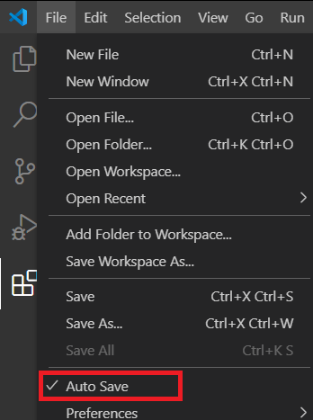et voici donc la commande map qui fait cela :

Maintenant nous pouvons mettre ce tableau de components dans React et JSX fait cela très bien!
import React from "react"
import Joke from "./Joke"
import JokesData from "./JokesData"
function App() {
const jokeComponents = JokesData.map(item => <Joke question={item.question} punchline={item.punchline} />)
return (
<div>
{jokeComponents}
</div>
)
}
export default App
Et le résultat est identique. On déplore toutefois un avertissement :

Ceci est dû au mappage du tableau. Il faut inclure une clé (key) unique par élément. On aurait pû choisir key=question car on sait qu’il n’y aura pas deux questions identiques. Le mot key doit obligatoirement être choisi. Dans un fichier data, ily a souvent une propriété id (qui est unique) utilisons-la pour notre tableau:
Et voici le fichier final de App.js:
import React from "react"
import Joke from "./Joke"
import JokesData from "./JokesData"
function App() {
const jokeComponents = JokesData.map(item => <Joke key={item.id} question={item.question} punchline={item.punchline} />)
return (
<div>
{jokeComponents}
</div>
)
}
export default App
Et le component Joke qui n’a pas bougé depuis l’exercie précédent :
import React from "react"
function Joke(props) {
const styles1 = {
display: props.question ? "block" : "none",
color: "#FF8C00",
}
const styles2 = {
color: !props.question && "#888888"
}
return (
<div>
<h3 style={styles1}>Question: {props.question}</h3>
<h3 style={styles2}>Réponse: {props.punchline}</h3>
<br />
</div>
)
}
export default Joke
Commme déjà cité plus haut il y a plusieurs méthodes relatif au tableau qui sont bons à voir ou à revoir (tapez MDN et la méthode dans google):
filter
map
sort
reduce
every
some
find
findindex
Mapping Components Practice¶
Given a list of products (as an array of objects, as seen in vschoolProducts) render a <Product /> component (which you’ll also to create) for each product in the list.
Make sure to use the array’s .map() method to create thes components, and don’t forget to pass a key prop to it to avoid the warning.
Voici le fichier vschoolProducts.js:
const products = [
{
id: "1",
name: "pencil",
price: 1,
description: "Perfect for those who can't remember things! 5/5 Highly recommend."
},
{
id: "2",
name: "Housing",
price: 0,
description: "Housing provided for out-of-state students or those who can't commute"
},
{
id: "3",
name: "Computer Rental",
price: 300,
description: "Don't have a computer? No problem!"
},
{
id: "4",
name: "Coffee",
price: 2,
description: "Wake up!"
},
{
id: "5",
name: "Snack",
price: 0,
description: "Free Snacks!"
},
{
id: "6",
name: "Rubber Duckies",
price: 3.50,
description: "For those who make mistakes"
}
]
export default products
Normalement les données du tableau mappé devrait ressembler à ça:

c’est-à-dire que nous passions les propriétés de l’objet. On peut aussi passer l’objet entier et sortir les propriétés dans le composant enfant (ici Product)
Voilà le fichier App.js:
import React from "react"
import Product from "./Product"
import productsData from "./vschoolProducts"
const productComponents = productsData.map(item => <Product key={item.id} product={item} />)
function App() {
return (
<div>
{productComponents}
</div>
)
}
export default App
Remarque: Quand on export des données d’un fichier ici du fichier vschoolProducts.js nous l’exportons avec la commande suivante: export default products, mais il est possible de l’importer avec un autre nom: dans le fichier App nous l’importons avec le nom productsData (import productsData from “./vschoolProducts”
Et le fichier Product.js:
import React from "react"
function Product(props) {
return (
<div>
<h2>{props.product.name}</h2>
<p>{props.product.price.toLocaleString("en-US", { style: "currency", currency: "USD" })} - {props.product.description}</p>
</div>
)
}
export default Product
Pour afficher l’unité du prix, on s’est servi de la méthode string.
Le résultat final:

Todo App - Phase 3¶
Let’s practice props and mapping components on our todo list app:
I’ve created a js file with some todos data in it, which I’m imported into this files. (Normally this data would come from an API call, not a local file).
Challenge: Using the array map method, render a child component for each todo item in the todosData array and pass the relevant data to it.
L’exercice est très similaire à l’exercice précédent, j’exposerai seulement les fichiers comme résultat. Sauf pour la partie case à cocher, j’expliquerai comment coché avec la propriété checked.
Voici le fichier todosData.js:
const todosData = [
{
id: 1,
text: "Take out the trash",
completed: true
},
{
id: 2,
text: "Grocery shopping",
completed: false
},
{
id: 3,
text: "Clean gecko tank",
completed: false
},
{
id: 4,
text: "Mow lawn",
completed: true
},
{
id: 5,
text: "Catch up on Arrested Development",
completed: false
}
]
export default todosData
Voici le fichier index.js (rien de nouveau dans celui-ci):
import React from "react"
import ReactDOM from "react-dom"
import App from "./App"
ReactDOM.render(<App />, document.getElementById("root"))
Voici le fichier App.js:
import React from "react"
import TodoItem from "./TodoItem"
import todosData from "./todosData"
function App() {
const todoItems = todosData.map(item => <TodoItem key={item.id} item={item} />)
return (
<div>
{ todoItems}
</div>
)
}
export default App
Attention de bien mettre key pour empêcher les doublons.
et le fichier TodoItem.js:
import React from "react"
function TodoItem(props) {
return (
<div className="todo-item">
<input type="checkbox" checked={props.item.completed} />
<p>{props.item.text}</p>
</div>
)
}
export default TodoItem
On remarque l’utilisation de la propriété checked:
<input type="checkbox" checked={props.item.completed} />
Pour afficher un vu suivant props.item.completd fixé par true ou false dans le fichier todosData.js. Le navigateur affiche un message d’erreur car cela fige la case à cocher (plus de possibilité de cocher ou de décocher manuellement). Mais cela va être résolut par la suite.
Class-based Components¶
Si l’on veut approfondir avec React, on sera limité par l’utilisation des Functional Component. C’est pourquoi nous allons utiliser les Class-based Components. Pour l’instant nous allons introduire les Class-based Components pour reproduire exactement ce que les fonctions peuvent faire. Mais dans les prochaines leçons nous allons découvrir que les Class-based Components peuvent faire bien plus, comme States, Livecycle Methods.
Découvrons maintenant comment convertir une Functional Component en Class-based Component:
import React from "react"
function App() {
return (
<div>
<h1>Code goes here</h1>
<div>
)
}
pour une Class-based Component, il n’y pas de parenthèses commme pour une Functional Component.
class App extends React.Component
export default App
Chaque Class-based Component à besoi d’au moin une méthode et cette méthode est la méthode render et cela doit impérativement être écrit de la cette manière :
class App extends React.Component {
render() {
}
}
export default App
La méthode render va retourner exactement la même chose que ce que l’on a pour les Functional Components. Nous pouvons donc copier ce qu’il y a dans dans return avec le mot return de la Functional Component :
class App extends React.Component { render() { return ( <div> <h1>Code goes here</h1> </div> ) } } export default App
Cette Class-based Component est identique à la Functional Component.
Voyons maintenant la méthode render(), à chaque fois que l’on désire faire une logique d’affichage, comme par expemple l’exercice d’affichage du texte en fonction de l’heure que l’on avait fait plus haut, le code sera inséré après la méthode render() et avant return :
class App extends React.Component {
render() {
const date = new Date();
return (
<div>
<h1>Code goes here</h1>
</div>
)
}
}
export default App
L’inline styling pourra aussi y être placé.
On peut créé des méthodes après class et avant render() et les appeler après la méthode render() avec this.yourMehodHere():
class App extends React.Component {
yourMethodeHere() {
}
render() {
const style = this.yourMethodeHere()
return (
<div>
<h1>Code goes here</h1>
</div>
)
}
}
export default App
Pour l’utilisation de props on fera précédé le mot props par this. :
class App extends React.Component {
yourMethodeHere() {
}
render() {
return (
<div>
<h1>Code goes here{this.props.whatever}</h1>
</div>
)
}
}
export default App
En ayant l’habitude d’utiliser props dans des functional Component, on oubliera vite le mot this. dans une Class-based Component.
Class-based Components Practice¶
Pour cette exercice nous allons mettre tous les composants dans un même fichier. Normalement, chaque composant est mis dans un fichier séparé.
Challenge:
Convert all 3 components to be class-based
Fix the small bug
import React from "react"
import ReactDOM from "react-dom"
// #1
function App() {
return (
<div>
<Header />
<Greeting />
</div>
)
}
// #2
function Header(props) {
return (
<header>
<p>welcome, {props.username}!</p>
</header>
)
}
// #3
function Greeting() {
const date = new Date()
const hours = date.getHours()
let timeOfDay
if (hours < 12) {
timeOfDay = "morning"
} else if (hours >= 12 && hours < 17) {
timeOfDay = "afternoon"
} else {
timeOfDay = "night"
}
return (
<h1>Good {timeOfDay} to you, sir or madam!</h1>
)
}
ReactDOM.render(<App />, document.getElementById("root"))
Pour convertir une Functional Component en Class-base Component :
Remplacer le mot function en class
Enlever les () après le nom de la fonction
Ecrire extends React.Component
Ecrire render()
Si il y a du code pour styling, etc… le mettre juste après render()
Copier return et son contenu
Si il y a des props, mettre {this.props.whatever}
import React from "react"
import ReactDOM from "react-dom"
// #1
class App extends React.Component {
render() {
return (
<div>
<Header />
<Greeting />
</div>
)
}
}
// #2
class Header extends React.Component {
render() {
return (
<header>
<p>welcome, {props.username}!</p>
</header>
)
}
}
// #3
class Greeting extends React.Component {
render() {
const date = new Date()
const hours = date.getHours()
let timeOfDay
if (hours < 12) {
timeOfDay = "morning"
} else if (hours >= 12 && hours < 17) {
timeOfDay = "afternoon"
} else {
timeOfDay = "night"
}
return (
<h1>Good {timeOfDay} to you, sir or madam!</h1>
)
}
}
ReactDOM.render(<App />, document.getElementById("root"))
On voit qu’il y un message d’erreur ‘props’ is not defined. Ceci est normal, car dans une class on doit utiliser this.props.whatever
Aussi, il faut passer les données à props
<Header username="windwaver" />
Voici le code final:
import React from "react"
import ReactDOM from "react-dom"
// #1
class App extends React.Component {
render() {
return (
<div>
<Header username="windwaver" />
<Greeting />
</div>
)
}
}
// #2
class Header extends React.Component {
render() {
return (
<header>
<p>welcome, {this.props.username}!</p>
</header>
)
}
}
// #3
class Greeting extends React.Component {
render() {
const date = new Date()
const hours = date.getHours()
let timeOfDay
if (hours < 12) {
timeOfDay = "morning"
} else if (hours >= 12 && hours < 17) {
timeOfDay = "afternoon"
} else {
timeOfDay = "night"
}
return (
<h1>Good {timeOfDay} to you, sir or madam!</h1>
)
}
}
ReactDOM.render(<App />, document.getElementById("root"))
Et le résultat:
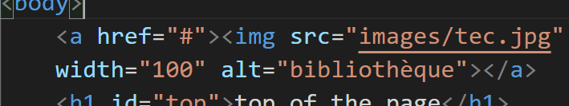State¶
Voilà, nous sommes arrivés au point le plus important de React. C’est la compréhension de state. State est utilisé pour la gestion des données. State permet de modifier les données. La différence entre state et props c’est que les données passées à un autre component par props ne peuvent être changées, elle sont immuables. State permet cela. On ne pourra par exemple jamais attribué une valeur à props comme par exemple :

Chaque fois que l’on veut modifier une donnée on devra passer par state. Et state ne peut être invoqué que par une Class-based Component.
Pour introduire state dans une Class-based Component, il nous faut écrire la méthode constructor() une ligne en dessous de class… La méthode constructor() est issue du Java Script. Elle initialise la class.
Pour se familiariser avec class voir Classes ou voir la vidéo suivante :
https://scrimba.com/p/p4Mrt9/cQnMDHD
Ensuite en dessous il nous faut écrire super() cette méthode à pour but de tirer quelque goodies de React.Component. Un des goodies est la méthode set state() que l’on verra plus loin. En dessous de super() on mettra this.state = {} qui est un objet avec une propriété que l’on peut appeler dans le Component.
Voici le fichier:
import React from "react"
class App extends React.Component {
constructor() {
super()
this.state = {
answer: "Yes"
}
}
render() {
return (
<div>
<h1>Is React important to know? {this.state.answer}</h1>
</div>
)
}
}
export default App
et le résultat :

Le this.state initialise notre state. Le fait particulier de state est que l’on peut modifier sa valeur plus tard. On peut passer state à un component enfant en invoquant props.
import React from "react"
class App extends React.Component {
constructor() {
super()
this.state = {
answer: "Yes"
}
}
render() {
return (
<div>
<h1>Is React important to know? {this.state.answer}</h1>
<ChildComponent answer = {this.state.answer}/>
</div>
)
}
}
export default App
Un truc cool avec state est quand on modifie la variable state tous les composant utilisant sa valeurs vont être rafraîchit. Nous verrons ceci plus tard avec la commande set state.
State Practice¶
Challenge:
Given an incomplete class-based component without a constructor, add a constructor and initialiye state to fix the brocken component.
import React from "react"
class App extends Component() {
return(
<div>
<h1>{this.state.name}</h1>
<h3>{this.state.age} years old</h3>
</div >
)
}
export default App
import React from "react"
class App extends React.Component {
constructor() {
super()
this.state = {
name: "Terry",
age: 27
}
}
render() {
return (
<div>
<h1>{this.state.name}</h1>
<h3>{this.state.age} years old</h3>
</div >
)
}
}
export default App
Et le résultat:
State Practice 2¶
Given a stateless functional component, add state to it. State should have a property called isLoggedIn wich is a boolean (true if logged in, false if not). Then, give your best shot at rendering the word “in” if the user is logged in or “out” if the user is logged out.
import React from "react"
function App() {
return (
<div>
<h1>You are currently logged (in/out)</h1>
</div>
)
}
export default App
voici pour la première partie:
import React from "react"
class App extends React.Component {
constructor() {
super()
this.state = {
isLoggedIn: true
}
}
render() {
return (
<div>
<h1>You are currently logged (in/out)</h1>
</div>
)
}
}
export default App
pour la dernière partie on utilisera du conditional rendering. Attention de bien le placer entre render() et return() :
import React from "react"
class App extends React.Component {
constructor() {
super()
this.state = {
isLoggedIn: false
}
}
render() {
let wordDisplay
if (this.state.isLoggedIn === true) {
wordDisplay = "in"
}
else {
wordDisplay = "out"
}
return (
<div>
<h1>You are currently logged {wordDisplay}</h1>
</div>
)
}
}
export default App
et le résulat :
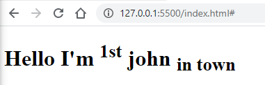


Todo App - Phase 4¶
In the previous iteration of this todo list app, we pulled in todos data from a JSON file and mapped over it to display the todo items. Eventually we’ll want to be able to modify the data, which will only happen if we’ve “loaded” the data in to the component’s state
Challenge: Change the <App /> component into a stateful class component and load the imported todosData into state.
import React from "react"
import TodoItem from "./TodoItem"
import todosData from "./todosData"
function App() {
const todoItems = todosData.map(item => <TodoItem key={item.id} item={item} />)
return (
<div>
{ todoItems}
</div>
)
}
export default App
en changeant en class:
import React from "react"
import TodoItem from "./TodoItem"
import todosData from "./todosData"
class App extends React.Component {
constructor() {
super()
this.state = {
todo: todosData
}
}
render() {
const todoItems = this.state.todo.map(item => <TodoItem key={item.id} item={item} />)
return (
<div>
{ todoItems}
</div>
)
}
}
export default App
Handling Events in React¶
Handling Events sont des événements tel que l’utilisateur déclenchera quand il clique sur un élément ou passe la souris sur un élément. Vous serez sûrement familié avec le language html qui est le suivant:
<button onclick="myFunction()">Click me</button>
Avec React c’est presque la même chose: les événements sont repris du Java Script, ils auront une majuscule.Ppour l’évémement de ci-dessus cela deviendrait:
onClick
Pour:
onmouseover
cela devient:
OnMouseOver
Ici quelques nom d’événement à réviser:
https://reactjs.org/docs/events.html#supported-events
Voici un code avec un bouton sans événement:

Administrons une fonction à l’événement onClick à ce bouton:
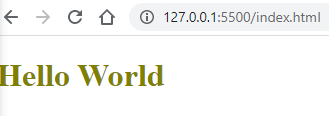et le résultat quant on clique sur le bouton:
Ou en appelant la fonction déclarée séparément:
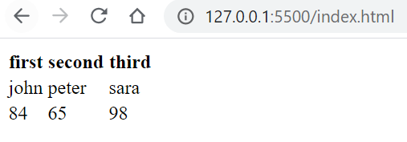Un petit exercice: en se référant à la page ci-dessous:
https://reactjs.org/docs/events.html#supported-events
trouver et écrire un événement lorsque le pointeur de la souris passe sur l’image, un événement se déclenche.
 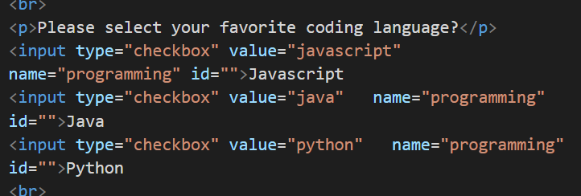
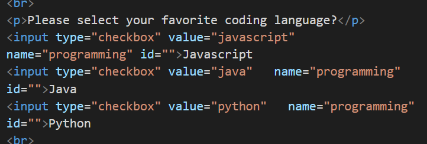
Il est clair que faire sortir le résultat d’un événement en console.log n’est pas intéressante. En fait les événements pourront modifié les state et c’est ce qui va faire une app très robuste.
Todo App - Phase 5¶
Challenge: Get rid of our warning about not having an onChange on our input. For now, the function that runs onChange can simply console.log something.
Voici le code comme il était resté au dernier exercice:
import React from "react"
function TodoItem(props) {
return (
<div className="todo-item">
<input type="checkbox" checked={props.item.completed} />
<p>{props.item.text}</p>
</div>
)
}
export default TodoItem
Voici la solution:
import React from "react"
function TodoItem(props) {
return (
<div className="todo-item">
<input
type="checkbox"
checked={props.item.completed}
onChange={() => console.log("changed")}
/>
<p>{props.item.text}</p>
</div>
)
}
export default TodoItem
On remarque pour plus de clarté, on peut mettre à la ligne ce qu’il y a entre <input …. et />
Changing State¶
Voici le moment venu d’apprendre comment on change la valeur de state. Prenons un exemple: un compteur (count) avec un bouton en dessous et lorsque l’on clique sur le bouton cela va nous changer la valeur de count.

voici le code de départ:
import React from "react"
class App extends React.Component {
constructor() {
super()
this.state = {
count: 0
}
}
render() {
return (
<div>
<h1>{this.state.count}</h1>
<button> Change!</button>
</div >
)
}
}
export default App
Petit exercie que faut il mettre pour que quand on appuie sur le boutton quelque chose apparaisse dans le console.log?
On doit rajouter un évenement onClick:
import React from "react"
class App extends React.Component {
constructor() {
super()
this.state = {
count: 0
}
}
render() {
return (
<div>
<h1>{this.state.count}</h1>
<button onClick={() => console.log("clicked")}> Change!</button>
</div >
)
}
}
export default App
Au lieu d’une arrow function (ici un fonction anonyme en ligne) créons une méthode et déclarons-la au bon endroit. Pour savoir où la déclarer, voici une explicaton sur les zones:
La partie render() est réservée pour les méthodes utilisée par React, entre constructor() et render() on peut mettre autant de méthodes que l’on veut.
Une forte convention que les gens ont, est de l’appeler handleClick lorsque on l’associe à l’événement onClick. Attention de bien mettre this.handlclick quand on appelle la méthode.
import React from "react"
class App extends React.Component {
constructor() {
super()
this.state = {
count: 0
}
}
handleClick() {
console.log("clicked!")
}
render() {
return (
<div>
<h1>{this.state.count}</h1>
<button onClick={this.handleClick}> Change!</button>
</div >
)
}
}
export default App
Bon ceci est enuyeux, changeons maintenant la valeur de state (ici de count).
Pour changer la valeur de count, on est tenté de changer directement avec la commande suivante:
handleClick(){
this.state.count++
}
Mais ceci ne se fait pas on ne change jamais la valeur originale de state. On crée une nouvelle version de state. On peut apparenté ceci aux habit que l’on porte. On ne changera pas la couleur de l’habit en le peignant, on changera l’habit. Et c’est la même chose pour state. Rappelons nous lorsque nous évoquons extends React.Component, il y quelques goodies qui nous sont offerts comme la méthode setState(). A chaque fois que l’on voudra changer state nous utiserons cette méthode. Il y deux choses que l’on peut passer à cette méthode en paramètre : prenons la plus simple, une nouvelle version de state. State est un un objet et l’on peut passer un nouvel objet comme ici :
this.setState({count: 1})
nous arrivons à une erreur : à chaque fois que l’on crée une class method, nous seront obligé de “bind” cette méthode à notre class. Si vous n’êtes pas tout à fait familié avec “bind” ne vous en fait pas trop. Sachez que chaque fois que vous faite une méthode avec setState, il faudra la “binder” avec votre classe. Et le moyen de “binder” se fait à l’intérieur de constructor().
this.handleClick = this.handleClick.bind(this)
Ce que fait cette commande est d’assurer que la méthode handleClick soit bound au contexte de this au travers de la classe.
import React from "react"
class App extends React.Component {
constructor() {
super()
this.state = {
count: 0
}
this.handleClick=this.handleClick.bind(this)
}
handleClick() {
this.setState({ count: 1 })
}
render() {
return (
<div>
<h1>{this.state.count}</h1>
<button onClick={this.handleClick}> Change!</button>
</div >
)
}
}
export default App
Résultat quand on click sur bouton la valeur passe de 0 à 1.

Lorsque l’on n’a pas besoin de connaître le résultat de la version d’avant de state, l’assignation du nouveau objet fera l’affaire. Par contre, lorsque l’on veut additioner 1 à count, il nous faut connaître l’état précédent. Pour ce faire on fera passer une fonction :
handleClick() {
this.setState(prevState => {
return {
count: prevState.count +1
}
})
}
Résultat : Lorsque l’on clique sur le bouton le compteur est incrémenter de 1.
Récapitulons :
import React from "react"
class App extends React.Component {
constructor() {
super()
this.state = {
count: 0
}
this.handleClick = this.handleClick.bind(this)
}
handleClick() {
this.setState(prevState => {
return {
count: prevState.count + 1
}
})
}
render() {
return (
<div>
<h1>{this.state.count}</h1>
<button onClick={this.handleClick}> Change!</button>
</div >
)
}
}
export default App
Nous avons:
<h1>{this.state.count}</h1>
qui affiche notre state ici la propriété count
Cette propriété a été initialisée dans constructor
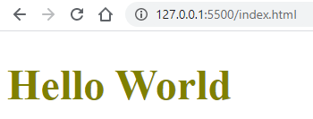On a ajouter un event onClick à notre button qui actionne notre méthode handleClick. Cette méthode a été crée dans la class App


Parce que la méthode handleClick utilise la méthode setState qui vient de extends React.Component, nous devons être sûr de “binder” dans constructor

Une fois que la méthode handleClick a été “bindé”, on peut utiliser la méthode setState pour soit attribué un objet pour créer une nouvel version de state (sans se préoccupé des versions précédentes)
, soit de passer une fonction qui passe le paramètre comme un objet de la version précédente et returne la nouvelle version après avoir utilisé la version précédente.

Working with .xml¶
JavaScript Tip: Loading XML Data Using Fetch
https://www.youtube.com/watch?v=0gON4MUdJE8
JavaScript Question: How do I Work with XML Data?
Good videos to learn¶
2.3 HTTP Post Request with fetch() - Working with Data and APIs in JavaScript https://www.youtube.com/watch?v=Kw5tC5nQMRY&t=443s
2.4 Saving to a Database - Working with Data and APIs in JavaScript https://www.youtube.com/watch?v=xVYa20DCUv0
Read The Docs¶
Ce tutoriel montre comment mettre en ligne un document fait avec ReStructureText en utilisant Read The Docs via Github.
Prérequis¶
Anaconda
un éditeur de texte (emacs)
un compte chez Github et l’installation sur PC (droits admin requis)
un compte chez Read The Docs (RTD)
Méthode¶
créer un répertoire avec comme nom le nom du projet dans cet exemple c’est
windwaverdans ce répertoire créer un répertoire nommé
docsouvrir Anaconda Prompt (pas le powershell)
se déplacer dans le répertoire
windwaver/docstapez:
sphinx-quickstart
répondre à la question Seperate source …
yComme ça les fichiersmake.batetMakefileseront seront séparés du répertoire_sourcesdans lequel seront nos fichiers (.rstet le fichierconfig.py)ouvrir le fichier
_sources/conf.pymodifier la ligne
html_theme = 'alabaster'parhtml_theme = 'sphinx_rtd_theme'ajouter la ligne suivante:
master_doc = 'index'sinon ça bug avec Read The Docscliquer-droite sur le répertoire
windwaveret choisir Git Basch Herelancer la commande:
git init
lancer la commande:
git config --global user.name 'Wind Waver'
lancer la commande:
git config --global user.email 'waverwind@gmail.com'
lancer la commande:
git add .
lancer la commande:
git status
lancer la commande:
git commit -m 'premier changement'
où
premier changementest le commentaire de la modificationsur https://github.com créer un nouveau répertoire et nommer le
windwavercopier et coller la commande (dans le MINGW64):
git remote add origin https://github.com/windwaver/windwaver.git
copier et coller la commande:
git push -u origin master
créer le fichier
READMEtouch README.md
décrire dans ce fichier le projet (à éditer dans emacs). Pour la mise en page c’est du Mark Down
lancer la commande suivante:
git add .
lancer:
git commit -m 'rajout de readme'
ensuite:
git push
sur https://readthedocs.org cliquer sur importer et faire un refresh
choisir le dossier
windwavercliquer sur build, cela va créer le site
éditer les différents fichiers
à chaque modification lancer les commandes suivante:
git add . git commit -m 'commentaire de la modification' git push
attendre quelques seconde et rafraichir le site avec
F5


Divers liens¶
GitHub¶
Pour modifier un projet¶
créer un repertoire
clique-droite sur le répertoire et choisir
git bashgit init
git config --global user.name 'Wind Waver'
git config --global user.email 'waverwind@gmail.com'
git clone https://github.com/windwaver/windwaver.git
git pull
git remote add origin https://github.com/windwaver/windwaver.git
git push -u origin master
Petites applications¶
Cette section présente des petites applications ou outils permettant de faire des petites choses utiles.
GSview¶
Extraction d’une page d’un document pdf¶
ouvrir avec GSview
Fichier -> Convert
choisir la bonne page et mettre Type à pdfwrite.
BRISS¶
Cette application permet de rogner une figure pdf.
Touches racourcis :¶
l |
pour loader un fichier |
c |
pour rogner (crop) |
Convertir divers formats¶
Conversions du son¶
CD -> mp3¶
Avec Ubuntu 12.04, j’utilise
asunder, c’est un bon programme car il extrait directement les métadonnées du CD.soundKonverter: on peut aussi utiliser ce programme. Astuce : copier/coller le contenu du CD sur le disque dur.
Extraire une bande son¶
Pour couper (extraire/éditer) une bande son :
Audacity

{kind=link}
{kind=link}
{kind=link}
{kind=link}
{kind=link}
{kind=link}
{kind=link}
{kind=link}
{kind=link}
{kind=link}
{kind=link}
{kind=link}
{kind=link}
{kind=link}
{kind=link}
{kind=link}
{kind=link}
{kind=link}
{kind=link}
{kind=link}
{kind=link}
{kind=link}
{kind=link}
{kind=link}
{kind=link}
{kind=link}
{kind=link}
{kind=link}
{kind=link}
{kind=link}
{kind=link}
{kind=link}
{kind=link}
{kind=link}
{kind=link}
{kind=link}
{kind=link}
{kind=link}